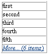

PATH
Documentation > WebObjects 4.5 >
WO Extensions

Component Description
The WOSimpleArrayDisplay component displays some or all of
an array's objects in a single-column table. If the WOSimpleArrayDisplay
component does not display all of the objects in the array, it displays
a hyperlink with the text More... (x items),
which can be linked to a page that displays all of the objects.

Synopsis
WOSimpleArrayDisplay {list=anArray;
itemDisplayKey=aString; [numberToDisplay=aNumber;]
listAction=aMethod;
[listActionString=aString;] };
Bindings
- list
- Array of objects to display.
- itemDisplayKey
- The key for the displayed attribute of the array's
objects. For example,
roleName.
If the objects are strings, use description.
- numberToDisplay
- The maximum number of objects to be displayed (defaults
to 5.) If the number of objects exceeds this number, a hyperlink
is displayed.
- listAction
- The action method that is called when the user clicks
the hyperlink that the component displays when the number of objects
exceeds
numberToDisplay.
- listActionString
- This string is appended to the
More
(x items) hyperlink
text that the component displays when the number of objects exceeds numberToDisplay.